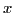
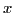

Next: Examples Up: Maxima, minima and inflection Previous: Problems Contents Index
(a)
 and
and
 changes sign,
changes sign,
or
(b)
and
 changes sign.
changes sign.
Thus, if a curve  changes from concave upwards to concave
downwards at a point, or the reverse, then such a point
is called a point of inflection.
changes from concave upwards to concave
downwards at a point, or the reverse, then such a point
is called a point of inflection.
From the discussion of §8.6, it follows at once that where the curve is concave up,
,
and where the curve is concave down,
 .
In order to change sign it must pass through the value
zero8.8;
hence we have:
.
In order to change sign it must pass through the value
zero8.8;
hence we have:
Solving the equation resulting from Lemma 8.8.1
gives the abscissas of the points of inflection. To determine the
direction of curving or direction of bending in the vicinity of a
point of inflection, test  for values of , first a trifle
less and then a trifle greater than the abscissa at that point.
for values of , first a trifle
less and then a trifle greater than the abscissa at that point.
If  changes sign, we have a point of inflection, and the
signs obtained determine if the curve is concave upwards or concave
downwards in the neighborhood of each point of inflection.
changes sign, we have a point of inflection, and the
signs obtained determine if the curve is concave upwards or concave
downwards in the neighborhood of each point of inflection.
The student should observe that near a point where the curve is concave upwards the curve lies above the tangent, and at a point where the curve is concave downwards the curve lies below the tangent. At a point of inflection the tangent evidently crosses the curve.
Following is a rule for finding points of inflection of
the curve whose equation is  . This rule includes also
directions for examining the direction of curvature of the curve
in the neighborhood of each point of inflection.
. This rule includes also
directions for examining the direction of curvature of the curve
in the neighborhood of each point of inflection.
When , the curve is concave upwards8.9.
When
 , the curve is concave downwards.
, the curve is concave downwards.
david joyner 2008-08-11